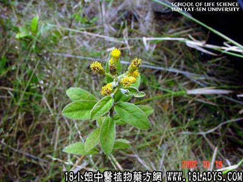

(本文解释权归中药材天地网兄弟站-18小姐中医植物药方网所有,如需转载请注明出处)

别名：白面风、毛老虎、土白芷、山芷梅。
植物名:白牛胆。
生长环境：本品为多年生草本或亚灌木状。荒山的草丛中常见，树林下则极少，常生于酸性向阳、排水良好的土壤上。
分布：广东省各地可见，尤以南部和海南部，此外华南西南地区和热带亚洲等地区亦有。
入药部分：根。
采集期：全年。
自采地点：山岗。
性味：性温、味辛、气香。
功能：祛风行气，消肿止痛、解毒。
主治、用量和用法：①全身浮肿、配伍用;②老人风寒咳，干用1两、猪瘦肉适量，清水三碗、煎成一碗服；③产后风：用法同上；④头风痛、脑痛：干用1至2来那个、猪瘦肉适量，清水煎服，或干用1至2两、清水三碗，煎成一碗，去渣，入猪脑炖1小时，服食；⑤胃痛：干用5钱至1两，清水煎服；⑥风湿脚气，配伍用；⑦跌打旧患，配伍用；⑧蛇咬伤，配伍用。
验方1：（治全身浮肿、风湿脚气方）山白芷5钱，豆豉姜5钱、独脚球5钱、丢了棒根5钱、黑老虎5钱、清水四碗，煎成一碗服。
（方解）本方为辛温祛风去湿之剂，每一药均有祛风消肿效能，但各具特长，如山白芷、黑老虎兼能化气，独脚球行血，豆豉姜达四肢去湿痺，丢了棒长于去湿。合而行乞血、走四肢、祛风邪，逐水湿，以治风湿脚气、全身浮肿，胜于独用。
（方歌）风湿脚气身肿浮，豉姜白芷独脚球，丢了棒根黑老虎，风能胜湿肿不见。
验方2：（治产后风方）山白芷5钱、益母草5钱，黑老虎5钱、独脚球5钱，清水三碗，煎成一碗服。
（方解）产后风即产后风晕，由于产褥失血而致，治宜补血为主。但补有形之血，难得速效，行气、活血、止晕则历。故本方山白芷、黑老虎祛风行气，益母草、独脚球祛风活血，并能去瘀生新，为妇产科要药。产后晕眩，光服此方甚验，一俟症状好转，仍需补血。
（方歌）产后风晕去血多，祛风活血起沉疴，山白芷同黑老虎，煎汤还加独脚球。
验方3：（治跌打旧患方）山白芷、白花丹头、山桂根、鸡骨香根、五爪龙根，每药5钱，清水三碗，煎成一碗服。
（方解）本方白花丹头、山桂花根、鸡骨香，芳香行气，活血定痛，五爪龙顺气，山白芷祛风、消肿，合为治跌打旧患之有效方剂。
（方歌）跌打旧患未除根，山白芷痛桂花根，鸡骨爪龙两用蔃 ，定痛还加白花丹。
(本文解释权归中药材天地网兄弟站-18小姐中医植物药方网所有,如需转载请注明出处)